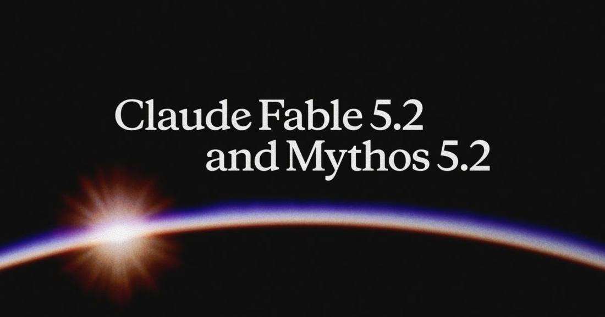

Anthropic Launches Claude Fable 5.2 and Mythos 5.2, Cutting Top-Tier Prices 20%
Anthropic launched Claude Fable 5.2 and Claude Mythos 5.2 on November 9, 2026, the same underlying model with Fable open to all users and Mythos restricted to verified cybersecurity and life-sciences organizations, priced at $8 per million input tokens and $40 per million output tokens, down 20% from the 5.1 versions, with a 49.1% FrontierCode 2.0 score and a 1,000-agent team formalizing Fermat's Last Theorem in 30 hours.

- 01THE LAUNCH — Anthropic launched Claude Fable 5.2 and Claude Mythos 5.2 on November 9, 2026, the same underlying model, with Fable available to all users and Mythos restricted to organizations approved through the Cyber and Life Sciences Verification Programs.
- 02THE DETAILS — Both models cost $8 per million input tokens and $40 per million output tokens, down 20% from the 5.1 versions, generate outputs up to 30% faster, and offer an optional fast mode at $16 and $80 that speeds token generation by up to 2.5 times.
- 03THE WATCHPOINT — Whether independent evaluations confirm the FrontierCode lead and the 1,000-agent Fermat result beyond Anthropic's own harness, whether developers adopt Fable as the top tier of a multi-model stack, and whether OpenAI and Google answer with their own flagship updates ahead of Anthropic's planned IPO.
WHAT HAPPENEDWhat Happened
Anthropic launched Claude Fable 5.2 and Claude Mythos 5.2 on November 9, 2026, its most capable models for the hardest technical work. The two are the same underlying model: Fable carries strong cybersecurity and biology safeguards, which lets Anthropic offer it to all users, while Mythos drops those safeguards and is available only to organizations approved through Anthropic's Cyber and Life Sciences Verification Programs. Fable 5.2 is available the same day on all platforms, including Amazon Web Services, Google Cloud, and Microsoft Azure, under the API model ID claude-fable-5-2.
The headline number is the price cut. Both models cost $8 per million input tokens and $40 per million output tokens, down from $10 and $50 for the 5.1 versions, and they generate outputs up to 30% faster. An optional fast mode speeds token generation by up to 2.5 times for $16 per million input tokens and $80 per million output tokens; Mythos fast mode is limited to organizations in the verification programs. Anthropic says Fable 5.2 also produces about 55% fewer unnecessary safeguard blocks than Fable 5.1.
On Anthropic's own benchmarks, Fable 5.2 scores 49.1% on FrontierCode 2.0 at Xhigh effort, against 32.4% for Fable 5.1, 45.5% for Claude Opus 5.5, 42.8% for OpenAI's GPT-6 Astra, and 41.1% for Google's Gemini 4 Carbon. It reaches 69.9% on FrontierSWE v2 and 74.2% on Humanity's Last Exam with tools. Mythos 5.2 scores 89.6% on Anthropic's internal CVE Rediscovery evaluation, finding 10.2% more vulnerabilities than Opus 5.5 and 14.4% more than Mythos 5.1. On the public RoboDojo simulation benchmark for robot control, Fable 5.2 scores 64.9%, against 27.6% for Fable 5.1 and 39.4% for Opus 5.5.
WHY IT MATTERSThe demo reel is the product strategy
Anthropic's announcement reads less like a model card than a capabilities portfolio: a team of 1,000 Fable 5.2 agents formalized Fermat's Last Theorem in 30 hours, against 11 days for the first formalization with an unreleased research version; the model solved two open problems in black-hole physics; it designed three working electronic devices from a one-paragraph prompt, with circuit boards ready for manufacturing in under a day; and it coordinated more than 1,000 subagents over eight days to build a working prototype operating system that boots on a laptop. Each demo is chosen to answer the same question from a different angle: can this model sustain long, open-ended, multi-step work without a human steering every step?
The honest caveat is that every one of these results is vendor-reported and unreplicated. The Fermat comparison is the most striking and the most carefully framed: the 30-hour run used minimal human intervention and no mathematical references, only a list of intermediate theorem statements to score progress, while Opus 5.5 with the same 1,000-agent setup completed only 26% of the formalization in 18 hours. That is a real signal about multi-agent coordination, but it is a signal about Anthropic's harness as much as about the model. The benchmark table carries the same grain of salt: Fable 5.2 leads Opus 5.5 on almost every capability Anthropic measured, yet Anthropic also discloses that it deliberately limited the model's training in AI research capabilities that could accelerate AI development itself, leaving it at about Opus 5.5's level in accelerator kernel optimization and model architecture work.
WHY IT MATTERSA price cut at the top of the stack
The 20% price cut on Anthropic's most capable tier lands in the same week Meta priced Muse Ember at a third of Haiku's cost per task and Google completed its eighth-generation TPU lineup. The three moves rhyme: every frontier lab is now competing on the economics of running agents, not only on benchmark peaks. Fable 5.2's positioning makes the point explicit. Anthropic recommends Opus 5.5 as the daily driver and Fable for the most ambitious, open-ended work, with Fable also playing Advisor or Orchestrator, consulting for smaller models or delegating simpler tasks down to them. That is a stack sale, and the cheaper top tier lowers the cost of the hardest jobs in it.
The launch also sharpens the access split. Mythos is the same model with the cyber and biology blocks removed, and Anthropic is explicit that it stays behind verification programs, with Claude Enterprise customers getting Mythos-powered vulnerability scanning through Claude Security instead. The safeguards on Fable 5.2 are as robust as on 5.1 but block less often, and Anthropic reports its strongest-ever protections against distillation, cutting the data harvested by distillers by 90% to 99%. The context is the planned IPO Reuters cites: Anthropic is broadening its lineup, Haiku 5.5 in October and now Fable and Mythos 5.2, while keeping its most dual-use capability behind a gate it can defend. The watchpoint is whether independent evaluations confirm the FrontierCode lead and whether the 1,000-agent formalization result generalizes beyond Anthropic's own harness.
SIGNAL JUDGMENT — ANALYSISAnthropic is selling stamina, not just scores, and cutting the price of its hardest tier to prove it
Tokenta Signal's judgment: Fable 5.2 is a capability step and a pricing statement at once. The benchmark lead over Opus 5.5 is real on Anthropic's own table, but the demos are the message: a 1,000-agent formalization in 30 hours, a working operating system built by subagents, three devices designed from one paragraph. Anthropic is arguing that its top model can now sustain the longest, least-supervised work, and it is cutting the price of that tier by a fifth while Meta and Google race on agent economics from below. The open question is replication, since every headline result is vendor-reported, and the deliberate cap on AI-research acceleration in training shows Anthropic knows exactly how dual-use this capability is. The two-door split, Fable for everyone, Mythos behind verification, is the compromise that lets it ship the capability and defend the gate.
WHAT REMAINS UNCERTAINWhat Remains Uncertain
EVIDENCEEvidence
Anthropic's official announcement 'Introducing Claude Fable 5.2 and Claude Mythos 5.2', dated November 9, 2026 and read in full: Anthropic upgraded Claude Fable and Claude Mythos for the most daunting technical challenges. Fable 5.2 and Mythos 5.2 are the same underlying model; Fable has strong cybersecurity and biology safeguards and is available to all users, while Mythos is available to organizations approved through the Life Sciences and Cyber Verification Programs. Testers found the models communicate more clearly, generate outputs up to 30% faster than the 5.1 versions, and cost $8 per million input tokens and $40 per million output tokens, with an optional fast mode at $16 and $80 that speeds token generation by up to 2.5 times. A team of 1,000 Fable 5.2 agents fully formalized Fermat's Last Theorem in 30 hours, with minimal human intervention; the model solved two open problems in black-hole physics, designed three working electronic devices from scratch, and coordinated over 1,000 subagents to build a working prototype operating system in eight days. On FrontierCode 2.0, Fable 5.2 scores 49.1% at Xhigh effort, against 32.4% for Fable 5.1 and 45.5% for Opus 5.5. Reuters' same-day report confirms the launch, the $8/$40 pricing as lower than the previous Fable and Mythos releases, and Mythos access restricted to approved organizations.
PRIMARY SOURCESPrimary Sources
- Anthropic: Introducing Claude Fable 5.2 and Claude Mythos 5.2
https://www.anthropic.com/claude-fable-and-mythos-5-2 - Reuters: Anthropic unveils new Fable, Mythos models as competition heats up ahead of IPO
https://www.reuters.com/technology/anthropic-unveils-new-fable-mythos-models-competition-heats-up-ahead-ipo-2026-11-09/
RELATEDRelated Intelligence
- OpenAI Sells $200 Codex Edition Chromatic That Turns Prompts Into Game Boy Games
- OpenAI Deploys Control Room, a Kill Switch That Halts Research Model Output in 35 Seconds
- IBM and Cisco Put Anthropic's Restricted Mythos Model Into Enterprise Security
- JPMorganChase Takes Claude Code Firm-Wide, Beyond Engineering